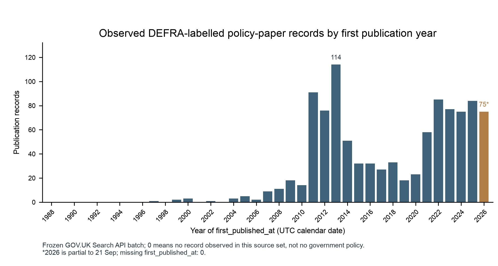
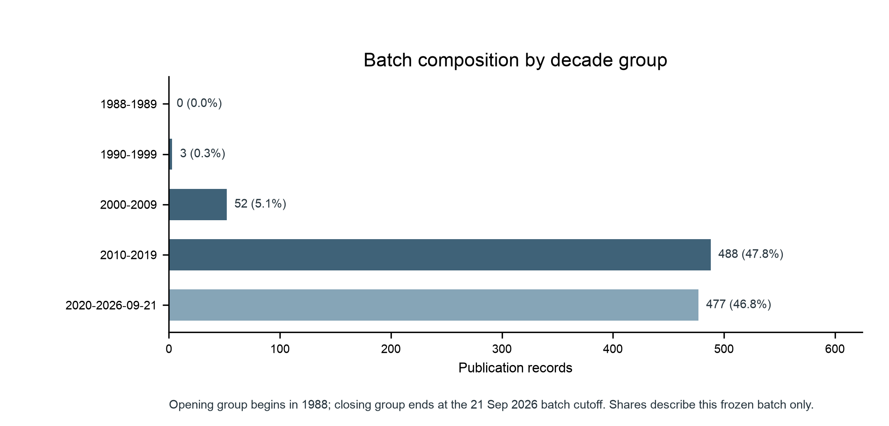
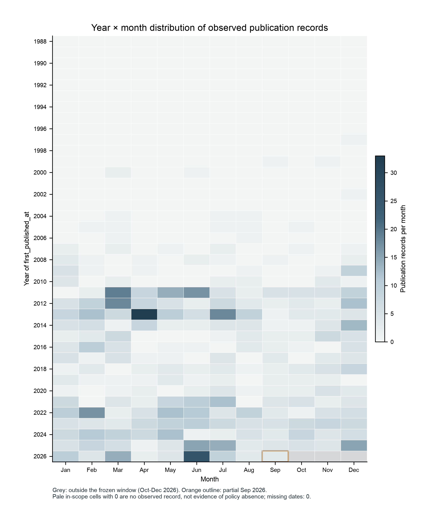

06 批次政府语料范围与覆盖评估
本次冻结查询中，GOV.UK 当前 DEFRA 机构标签下、符合 Search API
policy_paper 条件的发布记录及其关联内容。3,021下载成功 / 3,025
3,000提取成功 / 3,025
4剩余下载异常
21已下载但提取异常
网页提取成功不等于政策全文完整。附件全部提取成功的有附件记录为 998/1,016；部分成功 10；全部未成功 8。
时间构成



年代汇总
| 年代组 | 发布记录 | 批次内占比 | 边界 |
|---|---|---|---|
| 1988-1989 | 0 | 0.0% | partial_opening_decade |
| 1990-1999 | 3 | 0.3% | complete_calendar_decade |
| 2000-2009 | 52 | 5.1% | complete_calendar_decade |
| 2010-2019 | 488 | 47.8% | complete_calendar_decade |
| 2020-2026-09-21 | 477 | 46.8% | partial_closing_decade_to_cutoff |
9 个下载异常的有限处理
原地址真实网络重试仍为 8 个 403 与 1 个 HTTP 200 错误页。官网同一文件地址核验后恢复 5 个，剩余 4 个已停止重试。
| 对象 | 标题 | 结果 | 提取状态 |
|---|---|---|---|
cnt_299152ebeada5607089a | Climate adaption reporting third round: National Grid Gas plc | Recovered | success |
cnt_48a6f19a6607e492dc7b | Climate adaption reporting third round: National Grid Electricity Transmission | Unresolved | not_attempted_download_failed |
cnt_531ef7729743e1c8bd31 | Climate adaptation reporting third round: Portsmouth Water | Unresolved | not_attempted_download_failed |
cnt_64382de7be6292e95543 | OECD report: biodiversity, natural capital and the economy: a policy guide for finance, economic and environment ministers | Recovered | success |
cnt_7971dcf871bb3136e535 | Climate adaption reporting third round: Anglian Water | Unresolved | not_attempted_download_failed |
cnt_874c6030598f56b158bf | OECD report: towards G7 action to combat ghost fishing gear | Recovered | success |
cnt_968313db5fb8a50f393d | Climate adaption reporting third round: Birmingham Airport | Unresolved | not_attempted_download_failed |
cnt_9fffa8707949d2e58a6e | Climate adaption reporting third round: Thames Water | Recovered | success |
cnt_b7920fe7e4b7e2b7377c | Climate adaption reporting third round: Historic England and the English Heritage Trust | Recovered | success |
解释边界
- 不是 DEFRA 全部发布、英国政府整体或英语国家政府话语。
- 不是连续完整的 1988 年以来政策档案；最早观察记录在 1997 年。
- 不是已筛选出的气候／升温恐惧语料。
- 当前版本正文可能晚于首次发布日期；275 条记录后来有更新。
- 共同新闻—公众—政府窗口尚未确定，不能据此宣布时序分析可行。